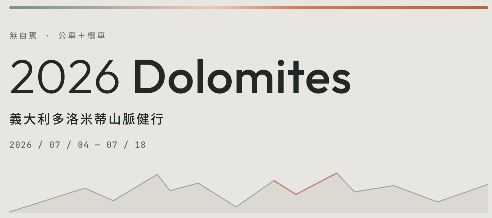

← 回文章列表
旅遊
多洛米蒂 行前規劃｜東西邊怎麼玩、住哪最方便、非自駕交通如何規劃
多洛米蒂地區大致上分成東邊和西邊，東邊有很多漂亮的湖泊山區，最有名的就是三尖峰（拉瓦雷多三尖峰 Tre Cime di Lavaredo）和布萊埃斯湖 (Lago di Braies)。西邊則是有非常多的特色纜車可以搭，最有名的是刀鋒山/刀背山（Seceda）。我們這次以大眾交通工具為主，全程靠公車與纜車，不用開車省下許多體力，銜接也都非常順暢喔！
住宿地點前六天在東邊，後六天在西邊，挑選上以交通方便為主。
西邊以 Ortisei 作為據點；東邊原先考慮住在舉辦 2026 冬季奧運的 Cortina d'Ampezzo，但後來考量房價真的比較高，因此將住宿地點調整到北邊的 Dobbiaco 與南邊的 San Candido 各三個晚上，實際走起來甚至比 Cortina 還要方便許多，完全不遜色於 Cortina。
東邊往西邊的移動方式可以透過公車的銜接翻山越嶺，中途經過 Passo Sella（塞拉山口）；也可以從北邊經過繞一大圈，經過 Dobbiaco 透過火車的銜接前往西邊。最後我們選擇使用公車銜接去西邊，中間停留一晚在 Passo Sella 的山屋（Rifugio Salei）當作西邊6晚的第一站。
實際經驗：多洛米蒂 Day 7｜跨區大移動 ＋ 入住 Passo Sella 山屋 Rifugio Salei
所以住宿的安排就是：Dobbiaco 3 晚 （東），San Vito 3 晚（東），Passo Sella 1 晚（西），Ortisei 5晚（西）
先玩東邊再玩西邊，飛機的選擇是威尼斯進、米蘭出。從威尼斯機場進到東邊的大城例如 Cortina 和 Dobbiaco，只需要搭乘大巴（Cortina Express / ATVO）大約花費兩到三個小時，非常方便。若從威尼斯要去到西邊的大城鎮，其實就和從米蘭過去差不多，所以可以安排威尼斯進、米蘭出（前往東邊再去西邊），或是米蘭進、威尼斯出（先玩西邊再去東邊）。當然如果進出都從威尼斯也很不錯，不過機票的選擇會比較少。
慕尼黑與維也納也是進出多洛米蒂（尤其是東多洛米蒂）可以選擇的城市，只是路程會稍遠，從慕尼黑的話還會需要經過德鐵轉乘，但沿路風景也會很美，如果是自駕的話，距離和米蘭不會差太多。
總結來說最快的是威尼斯機場（尤其是公車進出東多洛米蒂），再來是米蘭機場，再來說慕尼黑（進出東邊甚至比米蘭快），最後是維也納機場。